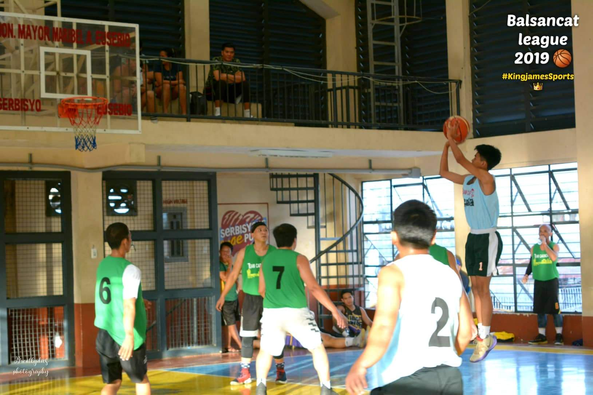
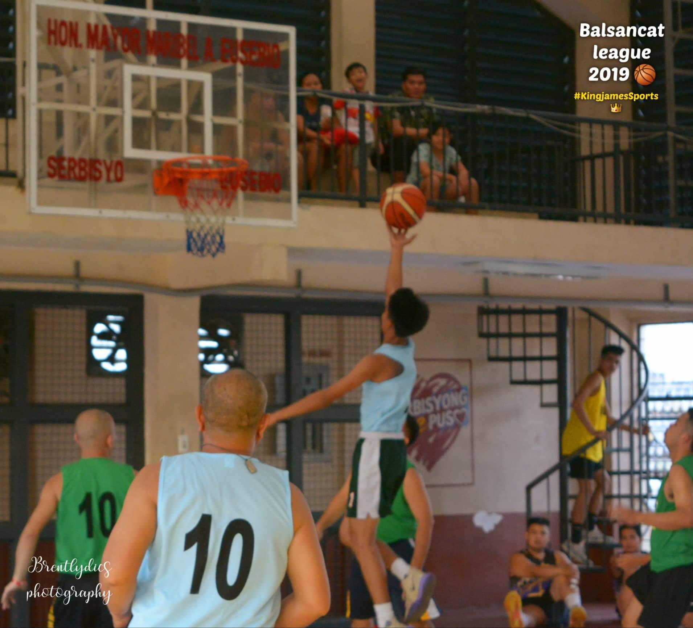

HOBBIES
BASKETBALL


MY STRENGTH AND WEAKNESS
my weakness in being an IT is to program because I know very little about programming because most of my education is
purely hardware and there is very little software and my stregths in IT are
repairing the system unit and repairing broken laptops because this helps my learning.
SEE MY SELF AFTER MY GRADUATION
I see my self when i graduate i will be a computer engineer because
this is really my dream job because i learned a lot about computers and to help my parents
and lift them out of the hardships to improve our family life and so here i want a job so that can do less work because
i know something about it.